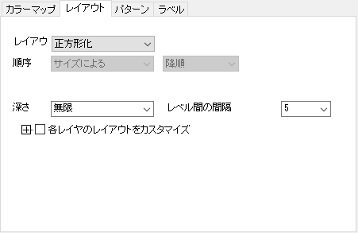
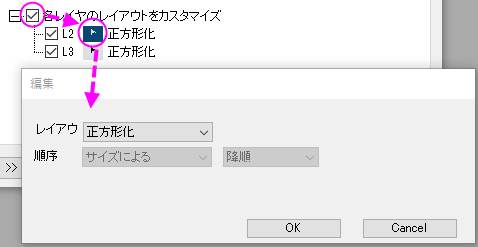

(作図の詳細) ツリーマップのレイアウトタブ
PD-Layout-tab-Treemap
このタブではツリーマップ図のレイアウト設定が可能です。

レイアウト
各レベルのノードの長方形を配置する方法として、次の6種類のレイアウトが利用可能です。
- 分割: X変数のレベルや値の順に基づいて、長方形を並べて配置します。
- 正方形化: サイズ列（要約統計量）に基づき、すべての長方形を大きい順に並べます。一番大きな長方形がプロットの左上に、最も小さいものが右下に配置されます。
- 正方形化 +: アスペクト比を向上させ、処理速度を保った正方形化の改良版です。基本的には正方形化と同じですが、行が決定されると、現在の行の方向と代替行の方向を比較します。アスペクト比を比較した後に行の方向を選択します。
- サイズ/中央/分割によるピボット: 正方形化はアスペクト比が良好ですが、並び順は無視されます。サイズ/中央/分割によるピボット のアルゴリズムは並び順を維持しつつ、アスペクト比も妥当な値を保つよう設計されています。
- サイズによるピボット: 最も大きい要素をピボットとします。アスペクト比の平均は良好です。
- 中央によるピボット: リストの中央の要素をピボットとします。（リストにn個ある場合、ピボットはn/2番目の要素）。安定性に優れています。
- 分割サイズによるピボット: 面積の合計がほぼ等しくなるようにリストを分割してピボットを決定します。バランスのとれたレイアウトです。
順序
四角形の並び順を、カテゴリ順、アルファベット順、サイズによる、 列による（任意の列を指定）から選択できます。
正方形化および正方形化+レイアウトでは、並び順は「サイズによる」のみがサポートされます。
深さ
表示する階層の深さを指定します。深さ = 1は、最上位（第1階層）のみ表示します。深さ = Nは、上位N階層のツリーマップを表示します。無限は、すべての階層のツリーマップを表示します。
レベル間の間隔
階層ごとの長方形の間隔を指定します。
各レイヤのレイアウトをカスタマイズ
このコントロールグループにチェックを入れると、最初のレベルを除いて、各レベルのレイアウトを個別にカスタマイズできます。

開いた編集ダイアログのレイアウトと順序の設定は、上記のものと同じです。